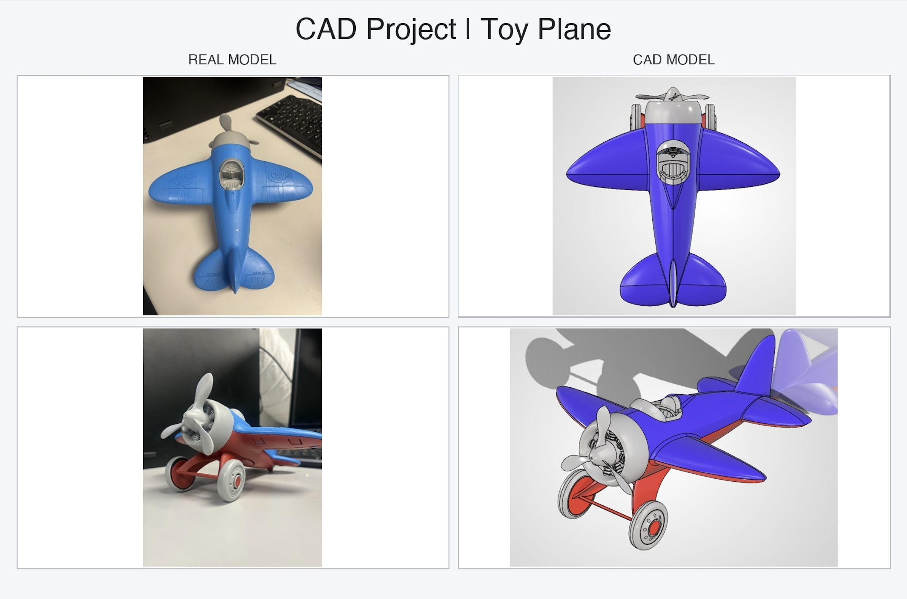
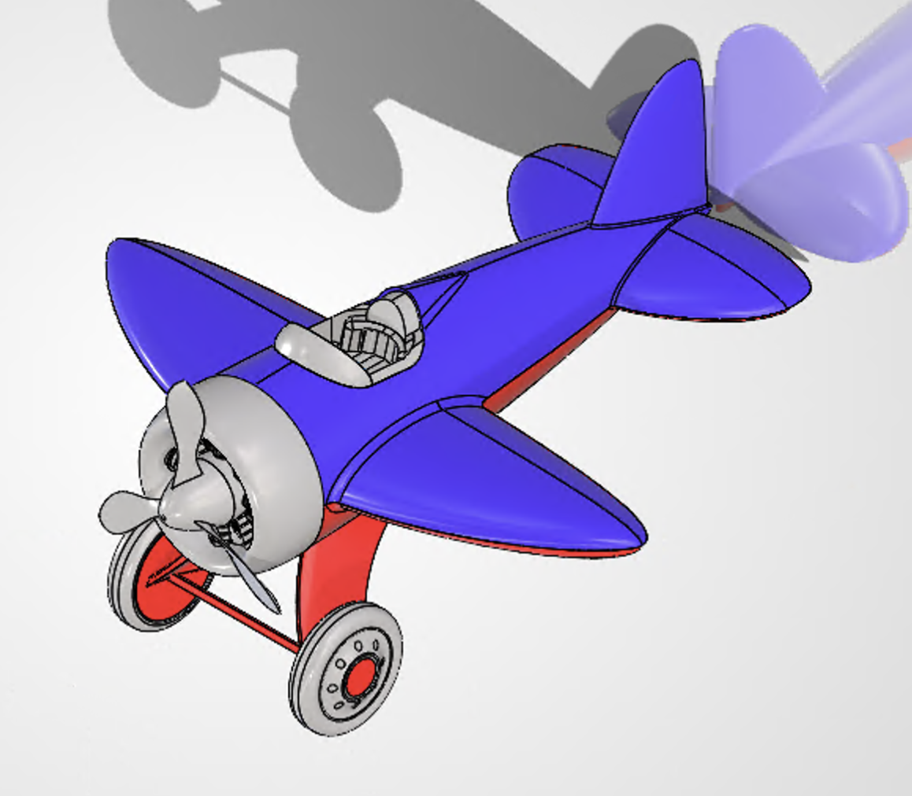

Reverse-engineered a toy airplane in SolidWorks from physical measurements and reference photographs.

1. Overview
CAD project built in Columbia Engineer’s Computer Graphics and Design course. I recreated a toy airplane as a dimensioned SolidWorks assembly from physical measurements and reference photographs. The project focused on translating an organic, injection-molded object into a clean, editable CAD model while preserving its proportions, interfaces, and recognizable details. I include this project to demonstrate my depth and understanding of CAD tools, SolidWorks, and graphic design.
2. Approach
I used symmetry, lofted surfaces, splines, guide curves, fillets, and split features to build the fuselage, wings, tail, propeller, cockpit, and wheels. I iterated on fit and curvature between components, then assembled the parts with matching interfaces so the final model could be edited and presented as a cohesive product.
3. Results
The completed model can be seen in the images below. The project strengthened my skills in SolidWorks surfacing, component design, assembly constraints, and engineering drawing packages. I also received an A+ in this course.
Skills & Tools
More Photos


